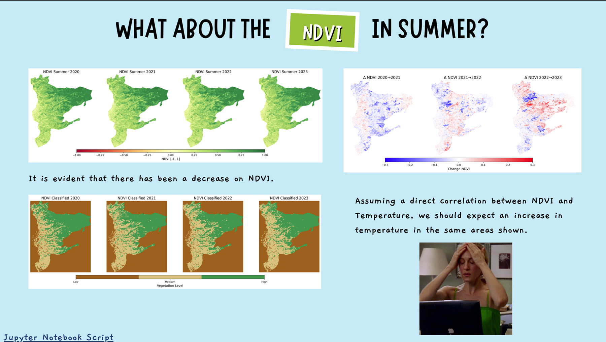

Award-winningDec 2025
Urban Heat Island Analysis · GenHack 2025
Analyzed ERA5 temperature bias and urban heat patterns, starting from Reggio Calabria and extending the analysis across a broader Italian station set.
Analysis
Compared ERA5 with station data and tested how vegetation, urban fraction, coastal influence, wind and rainfall relate to temperature bias.
Visualization
Built maps and statistical visuals to make the spatial and environmental patterns easy to interpret.
RecognitionWinner of the “Most Significant Visualizations Prize” at Institut Polytechnique de Paris ↗.
PythonERA5NDVIEDAStatistical analysisGeospatial visualization
View repository ↗